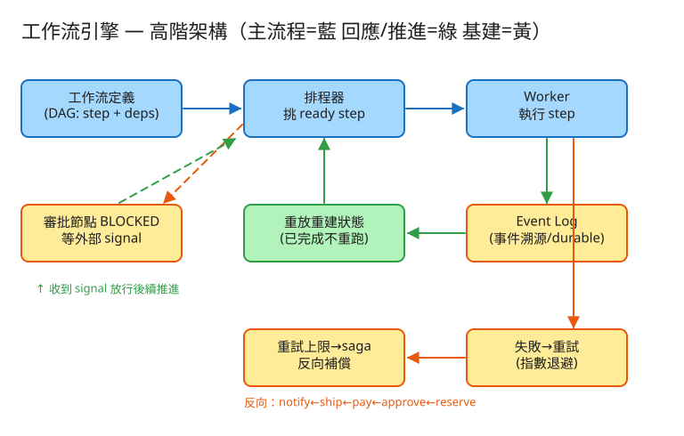

㊶ 工作流引擎 · 初學者友善版
M 排程/工作流
看故事就懂
輕鬆讀 25 分鐘
🧠 這份怎麼讀？
這份用「大腦比較好吸收」的方式重寫：先講生活比喻 → 把系統拆成小關卡 → 邊讀邊考自己。
分成兩部分：Part 1 概念（這系統在幹嘛）、Part 2 工程細節（怎麼真的蓋出來，一樣白話）。
遇到 💭 停一下 就先自己想 3 秒再往下看——這叫「提取練習」，比一直往下滑記得更牢。
1. 60 秒搞懂它在幹嘛
想像你在買一個網購商品，背後發生一連串事：預留庫存 → 主管審核 → 扣款 → 出貨 → 通知你。
這串動作有先後順序，中間可能等好幾天（等主管簽核），任何一步都可能失敗（物流 API 掛了、付款逾時）。
工作流引擎（像 Temporal、Airflow）就是專門幫你可靠地把這種「長流程」跑完的系統。
它最厲害的地方是：機器中途斷電重開，它能從中斷的那一步接著跑，而不是把已經扣過的款再扣一次。
🔑 一句話
工作流引擎 = 一個「有存檔、會收拾善後」的食譜執行管家：照步驟順序做、做完一步就記帳、斷電重開能接著做、做壞了會反向收拾。
2. 為什麼「依序呼叫」不夠用？
你可能會想：「不就照順序呼叫幾個 API 嗎？寫個程式一行一行做不就好了？」問題出在真實世界很不乖——
🍳 比喻：一個人邊看食譜邊炒菜，中途停電
你照食譜炒一道大菜：備料 → 等醬料醃 2 小時 → 下鍋炒 → 裝盤。如果炒到一半停電，
你重開瓦斯時會記得「我已經備好料、醃好了，現在從『下鍋炒』開始」嗎？還是傻傻地從備料重來（食材都浪費了）？
普通程式停電重開，就是整個從頭來——已經扣的款會再扣一次。
而且「等醬料醃 2 小時」這種等待，普通程式會傻站在那裡佔著爐子（佔著執行緒），等審批等三天就卡三天，太浪費。
工作流引擎把這些麻煩事——記進度、斷電續跑、失敗重試、失敗善後、長時間等待——通通幫你扛走，
你只要專心寫「食譜步驟」就好。
💭 停一下：為什麼「扣完款後機器掛掉，重開又把款扣一次」是個嚴重問題？普通程式為什麼會這樣？
看答案
因為普通程式沒有「做到哪一步」的記錄，重開只能從頭跑，於是「扣款」這個會花錢的動作被做了兩次（重複扣款）。工作流引擎靠「每做完一步就記帳」，重開時看帳本知道「款已扣過」，就跳過不重做。
3. 把系統拆成 4 個關卡
別被「工作流引擎」嚇到。它的本事其實就是 4 招，一招一招看：
1排順序：把流程畫成「有先後的食譜」
第一步是把流程寫清楚：哪幾步、誰先誰後。這張「步驟先後圖」工程上叫 DAG。
🍲 比喻：食譜的步驟順序
做菜有些步驟必須先做完才能做下一步：要先「備料」才能「下鍋炒」；但「燒水」和「切菜」可以同時做（互不相依）。
DAG 就是這張「哪些要排隊、哪些可以一起做」的關係圖。
引擎每一輪都看：「哪些步驟前置都做完了、自己還沒做？」這些就是「可以開動了（ready）」的步驟，挑出來執行。
👉 重點：「備料完才能炒」——前面沒做完，後面就解鎖不了。
2記帳本：每做完一步就「存檔」（durable execution）
這是整個引擎最核心、最神奇的一招。每完成一步，引擎就在一本只能往後加、不能塗改的帳本記一筆：「第 X 步做完了，結果是這個」。
🎮 比喻：有存檔點的遊戲
玩遊戲打到一半關機，重開時不會從第一關開始——它讀取存檔，把你直接送回上次的進度。
引擎也一樣：斷電重開時，它從頭「重放」帳本，遇到「這步做過了」就直接讀帳本裡記的結果、跳過不重做，
很快就「快轉」回中斷的地方，再從那裡繼續。
關鍵在那句「跳過不重做」：重放只是把進度還原，不會把已經扣過的款再扣一次。
這套「記帳 + 重放」的招式，工程上叫 durable execution（持久化執行），底層用的記帳法叫事件溯源。
3善後隊：做壞了就「反向收拾」（重試 + saga 補償）
某一步失敗了怎麼辦？引擎分兩段處理：
- 先重試：像逾時這種「可能只是剛好卡到」的小毛病，等一下再試，而且每次等更久（第一次等 0.1 秒、再來 0.2、0.4…避免一直猛敲對方）。
- 真的不行就善後：重試很多次還是死，就認定「這步永久失敗」，啟動反向收拾。
↩️ 比喻：出貨失敗，把前面做的事倒著收回來
訂單流程走到「出貨」失敗了，總不能錢扣了、貨沒出就放著。引擎會把前面已經做過的動作倒著一個個收拾：
已扣的款退回、已預留的庫存釋放。後做的先收拾（像疊盤子，先收最上面那個）。
這個「每個會造成後果的步驟，都先準備好一個對應的『反悔動作』」的設計，工程上叫 saga 補償。
4暫停閘：卡住等人簽名才繼續（人工審批）
有些步驟不是機器能自己做的，要等真人簽核（例如大額訂單要等主管核准）。流程跑到這裡就暫停。
✋ 比喻：公文卡在主管桌上
公文跑到「待主管簽名」這格就停住，主管可能今天不在、明天才簽。聰明的做法是：
把公文放著（記進帳本），承辦人先去忙別的，不是傻站在主管門口等。等主管簽了（外部送來一個「放行」訊號），流程才繼續往下走。
重點：等待時不佔資源（不傻站著等），狀態已經寫進帳本，所以就算等三天、中間機器還重開過，簽核一到照樣能接著跑。
這個「等外部來敲一下才醒」的放行訊號，工程上叫 signal。
✅ 四關一句話
① 把流程畫成有先後的食譜（DAG） → ② 每步做完就存檔記帳（重放不重做） → ③ 失敗先重試、不行就反向善後（saga） → ④ 遇審批就暫停等簽名（signal）。就這樣。
4. 設計時最怕的 4 件事
工程上的「取捨」聽起來很抽象。換個方式記：這個系統最怕四件事，每個設計都是為了避開某個「怕」。
😱 怕「重複做副作用」
最怕的就是重複扣款、重複出貨。機器重開、訊息重送都可能讓同一步被做兩次。
對策：每步做完就記帳，重做前先查帳本「這步做過沒？」——做過就跳過。至少做一次 + 查帳跳過 = 效果上只做一次。
😱 怕「狀態弄丟」
帳本就是這系統的命根子。帳本一丟，就不知道做到哪、無法續跑、無法善後。
所以帳本寫下去就絕不能掉（要落到硬碟、要備份），這比「跑得快」更重要。持久性壓倒一切。
😱 怕「重放結果對不上」
既然要靠「重放帳本」還原進度，那流程碼就不能依賴每次都不一樣的東西（像當下時間、亂數、即時去問外部 API）——
否則重放時算出來的跟當初不一樣，帳就對不上了。對策：這些「每次不一樣」的事一律當成一個步驟把結果記進帳本，重放時讀帳本的舊值。流程必須可重現。
😱 怕「等待佔著資源」
審批等三天，如果這三天一直佔著一條執行緒傻等，幾百萬個流程一起等就把機器塞爆了。
對策：等待時把狀態落盤、把資源放掉，等訊號來了再喚醒重載。等待要「免費」。
5. 一張圖看懂

✏️ 用 Excalidraw 開啟編輯（diagram.excalidraw）
白話導讀：
- 📋 食譜（DAG 定義）寫好流程有哪幾步、誰先誰後 →
- 🧭 排程器每一輪看帳本，挑出「前置都做完、可以開動」的步驟 →
- 🔧 工人（Worker）真正去執行那一步（呼叫 API、算東西）→
- 📒 結果寫進帳本（Event Log）——這是唯一真相、永不塗改、斷電靠它續跑 →
- ↩️ 失敗 → 先重試（每次等更久），超過上限 → saga 反向善後（退款、釋放庫存）→
- ✋ 遇到審批 → 暫停（BLOCKED），等外部送來放行訊號（signal）才繼續。
6. 名詞白話翻譯
看完上面，這些詞你其實都已經懂了，這裡只是把「工程術語 ↔ 白話」對起來，Part 2 會用到：
| 工程術語 | 白話解釋 |
|---|
| 工作流引擎 | 幫你可靠跑完「長流程」的管家（Temporal / Airflow） |
| DAG | 「有先後的食譜」：哪些要排隊、哪些可以一起做 |
| step（步驟） | 食譜裡的一個動作（備料、下鍋…） |
| durable execution | 「有存檔的執行」：每步記帳、斷電可續跑 |
| 事件溯源 / Event Log | 那本只加不改的「帳本」，記每一步做了什麼 |
| 重放（replay） | 重開時讀帳本，把進度「快轉」回中斷點（做過的跳過） |
| 冪等 / exactly-once 效果 | 同一步做幾次，後果只發生一次（不重複扣款） |
| 指數退避重試 | 失敗就等一下再試，每次等更久（0.1→0.2→0.4 秒） |
| saga 補償 | 做到一半失敗，倒著「反向收拾」（退款、釋放庫存） |
| signal | 外部送來的「放行」訊號（主管按了核准） |
| BLOCKED（暫停） | 流程卡在審批節點等簽名的狀態 |
| 確定性 / 可重放 | 流程不依賴「每次不一樣」的東西，才能正確重放 |
| sharding（分片） | 太多流程時，按編號分給好幾台機器各管一批 |
🛠️ Part 2 ｜ 工程細節（一樣白話）
概念懂了，來看「真的要動手蓋，得想清楚哪些事」。一樣用比喻，不用怕。
7. 要準備多大？（規模估算）
🍱 比喻：辦活動前先估人數
辦活動前，你會先估「大概來幾個人」，才決定訂幾個便當、租多大場地。
系統設計也一樣：先估數字，才知道要準備多大的「料」。這一步叫規模估算。
我們估幾個關鍵數字（數字不必背，重點是感受它的「形狀」）：
| 估什麼 | 大概數字 | 所以呢？ |
|---|
| 同時有多少流程「在飛」 | 100 萬個長流程同時進行 | 大多在等審批/計時，不太花 CPU，只佔「帳本狀態」 |
| 每個流程幾步 | 平均 20 步 | 共 2000 萬個步驟狀態要追蹤 |
| 帳本多大 | 每流程帳本約 5 KB | 100 萬 × 5KB ≈ 5 GB 活躍狀態（+ 歷史歸檔） |
| 等待多久 | 審批可達好幾天 | 等待不能佔著記憶體／執行緒 → 落盤，事件來才喚醒 |
💡 關鍵洞察：成本在「等與記」，不在「算」
這系統最特別的地方：100 萬個流程大多在「等」（等簽核、等計時、等外部回覆），幾乎不耗 CPU。
真正稀缺的是「那本帳的容量與不能丟」。所以整個設計圍繞「狀態落盤 + 事件來了才喚醒」，而不是「養一堆執行緒一直跑」。
💭 停一下：100 萬個流程同時在跑，為什麼不需要 100 萬條執行緒一直開著？
看答案
因為它們大多在「等待」（等審批、等計時器、等外部事件），等待時狀態已寫進帳本、資源被放掉，不佔執行緒。只有「真的有事要做」的那少數步驟才需要工人去跑。等待是「免費」的——這正是長流程能擴展到百萬級的關鍵。8. 系統之間怎麼溝通？（API）
🍔 比喻：點餐單
API 就是兩個系統之間講好的「點餐單格式」：你要點什麼（給我哪些欄位）、我回你什麼。
講好格式，雙方就能合作，不用知道對方廚房怎麼運作。
這題只要記住四張「點餐單」：
① 定義一份食譜（DAG：有哪些步驟、誰先誰後、各自的「反悔動作」）
POST /api/v1/workflows
給我：{ 名稱, 步驟清單[{ id, 前置deps, compensate反悔動作 }] }
這就是把食譜寫下來。每個步驟可以註明它的「前置」（要先做完誰）和「反悔動作」（萬一要善後時怎麼倒回去）。
② 開始煮一道（啟動一個流程實例）
POST /api/v1/workflows/{名稱}/start → 回我一個 run_id（這鍋的編號）
同一份食譜可以同時煮很多鍋，每鍋一個 run_id 各記各的帳，互不干擾。
③ 對「等簽名」的步驟送放行訊號（signal）
POST /api/v1/runs/{run_id}/signal 給我：{ step:"approve", decision:"approve" }
這就是主管按下核准。訊號一到，引擎下一輪就把那個暫停的步驟喚醒、繼續往下跑。
④ 查現在做到哪 / 取消整鍋
GET /api/v1/runs/{run_id} → 回我每步狀態、重試幾次、帳本
POST /api/v1/runs/{run_id}/terminate → 取消（會觸發 saga 反向善後）
查詢能看到「卡在哪一步、重試幾次」（這就是「可觀測」）；取消會啟動反向收拾，把已做的倒回去。
9. 系統要記住哪些事？（資料模型）
📒 比喻：三本筆記本
系統要把資料記在「筆記本」（資料表）裡。這題只要三本：
📋食譜簿（流程怎麼走）
每份流程定義一列：名稱、版本、步驟清單（每步的 id、前置 deps、反悔動作 compensate）。
這是「死的」設定，描述流程該怎麼走。
🍳每鍋簿（哪一鍋、狀態如何）
每啟動一次流程一列：run_id（主鍵）、用哪份食譜、狀態(進行中/完成/失敗)、開始時間。
用 run_id 區分每一鍋。
📒帳本（最關鍵：每步發生了什麼）
這就是 Part 1 那本只能往後加、不能塗改的帳本：run_id、第幾筆、事件類型、哪一步、結果/重試次數、時間。
事件類型像：某步完成 / 某步重試 / 某步失敗 / 某步暫停等審批 / 某步已善後。
為什麼用「帳本」而不是「一張可改的狀態表」？
因為帳本帶來三個超能力：(1) 斷電可續跑——重放帳本就還原進度；(2) 每次重放結果都一樣——同一本帳永遠算出同一個狀態；(3) 完整稽核——每一步何時做、重試幾次都查得到。
「目前進度」不是存在某欄位，而是把整本帳從頭加總出來的結果。
10. 哪裡會塞車、怎麼拓寬？（擴展）
🚗 比喻：找出塞車路段，拓寬它
系統變大時，總有某個環節會先「塞車」。工程師的工作就是找出最會塞的地方，把它拓寬。一個一個看：
| 哪裡會塞車 | 怎麼拓寬 |
|---|
| 百萬個流程同時在飛，一台機器管不完 | 按 run_id 分片，分給好幾台機器各管一批；負責挑步驟的排程器不存狀態，可多開幾台 |
| 審批等好幾天，狀態不能一直佔記憶體 | 等待時狀態落盤、放掉資源；用計時器/事件索引，到期或訊號來才喚醒重載 |
| 要執行的步驟太多，工人忙不過來 | 工人和引擎分開，工人從「待辦佇列」自己拉活做；不夠就多請工人，長短任務分流 |
| 長壽流程的帳本越記越長，重放變慢 | 定期存個快照（snapshot）當新起點，或「截舊帳另起新鍋」(continue-as-new)，縮短重放 |
| 大家都往同一本帳猛寫，寫入塞車 | 按 run_id 分片分散寫；順序/批次寫；舊帳歸檔到便宜的儲存 |
11. 還有哪些「魚與熊掌」？（取捨）
「Part 1 的四個怕」是核心取捨。這裡補幾個常被面試官追問的：
⚖️ 中央指揮 vs 各自接力（編排 vs 編舞）
本題是編排：有個中央引擎掌握全流程，好觀測、好善後，但引擎是焦點與單點考量。
另一派「編舞」靠服務間互發事件接力，去中心、鬆耦合，但流程「散」在各處、難追蹤難善後。需要善後的長流程多選編排。
⚖️ 用程式碼寫流程 vs 用宣告式 DAG
程式碼定義（Temporal）表達力強（任意分支、迴圈），但要靠規矩保證「可重放」；
宣告式 DAG／狀態機（Airflow、Step Functions）好畫圖、好檢查，但較不靈活。
⚖️ 同步呼叫 vs 非同步有狀態
同步呼叫鏈簡單，但會被最慢一環卡死、不耐久等；工作流引擎本質是非同步、有狀態，
用「記帳落盤」換來「可以等很久、可以斷電續跑」。
💭 追問：審批等三天，引擎中途掛了怎麼辦？
沒事。狀態都在帳本裡，重開時重放帳本就還原到「暫停等審批」的狀態；等簽核訊號（signal）一到，照樣喚醒繼續跑。💭 追問：連「反向善後」本身也失敗了怎麼辦？
善後動作也會記進帳本、也可以重試；如果重試到底還是不行，就標成「需人工介入」的狀態，叫真人來處理（像死信／人工兜底）。12. 動手玩玩看
讀十遍不如玩一遍。這題有一個真的可以跑的小程式，讓你親眼看到「排序 → 記帳 → 重試 → 善後 → 審批」：
# 啟動（在這題的 demo 資料夾裡）
cd demo
php -S localhost:8041 -t public
# 然後瀏覽器打開 http://localhost:8041
- 先載入範例食譜：訂單履約（reserve, charge_prep → approve(審批) → pay → ship → notify）。
- 一直按 tick（步進），看引擎每輪挑出「前置都完成」的步驟往前推。
- 故意注入 ship 失敗，看它先重試、超過上限後反向善後（退款、釋放庫存）。
- 對 approve 送一個 signal 放行，看暫停的審批被喚醒繼續跑；觀察
replayedNoRerun（重放沒重做）。
玩的時候想一下把同一鍋重放一次，看已完成的步驟會不會「再做一次」（不會——它從帳本讀結果跳過）。這就是 durable execution 的精髓。把 ship 弄失敗，看善後是不是倒著把前面做的收回來——這就是 saga 補償。
13. 考考自己
先不要看答案，自己用講給朋友聽的方式回答看看（講得出來才是真的懂）：
Q1：用「停電炒菜」解釋，為什麼普通程式跑長流程會出問題？
普通程式沒記「做到哪一步」，停電重開只能從頭來，於是「扣款」這種花錢的動作被做兩次。工作流引擎靠每步記帳、重開重放帳本，已做的跳過不重做。Q2：DAG 是什麼？用食譜的比喻說說看。
DAG 是「有先後的食譜」：有些步驟要先做完才能做下一步（備料完才能炒），有些可以同時做（燒水和切菜）。引擎每輪挑出「前置都完成、自己還沒做」的步驟去執行。Q3：durable execution（有存檔的執行）是什麼？用遊戲存檔解釋。
像遊戲打到一半關機，重開讀存檔回到上次進度，不從第一關開始。引擎每步記進帳本，斷電重開時重放帳本、做過的直接讀結果跳過，快轉回中斷點再繼續——重放不重做副作用。Q4：saga 補償是什麼？為什麼長流程不能用一般的「資料庫回滾」？
saga = 每個會造成後果的步驟配一個「反悔動作」，失敗時倒著一個個收拾（退款、釋放庫存）。因為長流程跨好幾個服務、跨好幾天，沒辦法用單一資料庫交易一次回滾，只能靠反向補償。Q5：人工審批節點怎麼運作？等三天為什麼不浪費資源？
流程跑到審批就暫停（BLOCKED），狀態落盤後放掉資源，不傻站著等。外部送來放行訊號（signal）才喚醒繼續。所以等三天、中間還重開過都沒關係。Q6（工程）：為什麼流程碼「不能直接讀當下時間或亂數」？
因為引擎要靠「重放帳本」還原進度，若流程依賴每次都不一樣的東西（時間、亂數、即時問外部），重放算出來的會跟當初對不上，帳就壞了。對策：這些一律當成一個步驟把結果記進帳本，重放時讀帳本的舊值。Q7（工程）：100 萬個流程同時在飛，為什麼真正稀缺的是「狀態容量」而不是 CPU？
因為它們大多在等待（審批/計時/外部），等待時不佔執行緒，幾乎不耗 CPU。但每個流程的帳本狀態都得可靠保存、不能丟，所以瓶頸在「持久化狀態的容量與一致性」，整個設計圍繞「狀態落盤 + 事件喚醒」。14. 30 秒回顧
工作流引擎 = 一個「有存檔、會收拾善後」的食譜執行管家。
4 個關卡：① 把流程畫成有先後的食譜（DAG） → ② 每步做完就記帳存檔，重放不重做（durable execution） → ③ 失敗先重試、不行就反向善後（saga） → ④ 遇審批就暫停等放行訊號（signal）。
4 個怕：怕重複扣款（記帳跳過＝只做一次）、怕弄丟帳本（持久性壓倒一切）、怕重放對不上（流程要可重現）、怕等待佔資源（等待要免費）。
工程細節一句話：成本不在「算」在「等與記」 → 用「點餐單(API)」定義食譜/啟動/送 signal/查詢 → 三本筆記本（食譜/每鍋/帳本，帳本只加不改）→ 太大就按 run_id 分片、等待落盤、帳本太長就存快照。
想看更精簡、面試速查用的版本？👉 前往完整版（同樣內容的工程速查格式）。